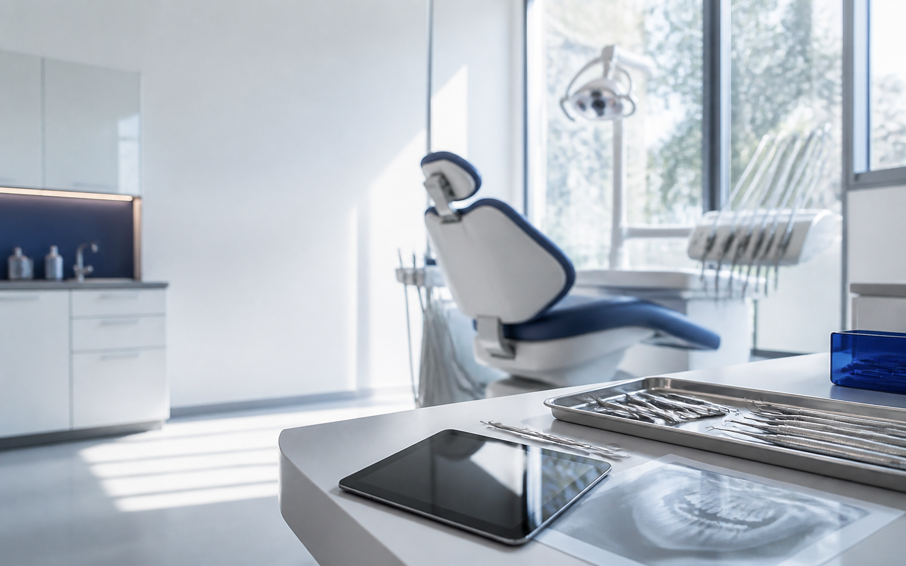

Wizyta / przykład10:30
Pacjentka A.K.
- Zapis
- Potwierdzenie
- Wizyta
- Opieka po
Denty porządkuje kontakt od zapisu do opieki po wizycie — bez dokładania kolejnego chaosu recepcji.
Zobacz przebieg wizyty Projekt koncepcyjny / bez deklarowanych wdrożeń
Pacjentka A.K.
Denty porządkuje pracę wokół wizyty. Nie diagnozuje, nie wysyła wiadomości bez reguły i nie zastępuje rozmowy wtedy, gdy potrzebny jest człowiek.
Recepcja widzi, co już wydarzyło się w kontakcie z pacjentem i co wymaga reakcji. Poniższy przebieg jest demonstracją interfejsu.
Termin utworzony
Recepcja zapisuje źródło kontaktu, preferowaną godzinę i krótką notatkę bez przełączania między arkuszami.
Skrypt rozmowy nie zastępuje uważności. Pomaga zebrać ten sam podstawowy kontekst i przekazać go dalej bez przepisywania.
Dane demonstracyjne · bez informacji klinicznych
Recepcja widzi tylko elementy potrzebne do organizacji przyjęcia. Brakujący krok staje się zadaniem z właścicielem, a nie czerwonym alarmem bez kontekstu.
Przykładowy widok łączy plan dnia z kolejką kontaktu. Dane są demonstracyjne i nie przedstawiają prawdziwych pacjentów.
Zamiast automatycznie ponawiać kontakt, Denty proponuje recepcji spokojną kolejkę: sprawdź preferencję, wybierz człowieka i zakończ próbę po ustalonym limicie.
Lekarz określa treść zaleceń. Recepcja widzi jedynie, czy zadanie komunikacyjne zostało przygotowane, przekazane i zamknięte.
Każda rola czyta ten sam przebieg, ale widzi inne zadanie. Recepcja prowadzi kontakt, asysta przygotowuje przyjęcie, lekarz zatwierdza treść medyczną.
Przy wiadomości widać termin, poprzednią odpowiedź i kolejne zadanie — bez szukania po kilku kanałach.
Wspólna oś kontaktuGabinet ustala treść, kanał i moment wysyłki. Denty pokazuje stan, ale nie udaje samodzielnej decyzji medycznej.
Kontrola po stronie zespołuKolejka pokazuje brakujące potwierdzenia i zaplanowany kontakt po wizycie, zamiast kolejnego wykresu bez działania.
Zadania zamiast statystykDemonstracyjny model dostępu oddziela organizację wizyty od treści klinicznej. Zespół widzi tylko to, czego potrzebuje do swojego zadania.
Wersja portfolio pokazuje sposób myślenia, nie gotowy system medyczny. Każdy kanał, harmonogram i uprawnienie wymaga realnego wdrożenia, podstawy prawnej i konfiguracji placówki.
Nie. Koncepcja skupia się na organizacji kontaktu i nie deklaruje funkcji EDM.
Nie. Wszystkie interakcje na tej stronie działają wyłącznie lokalnie.
Nie. Inicjały, terminy i statusy są syntetycznym materiałem demonstracyjnym.
Formularz pokazuje lokalny stan interakcji. Dane nie są wysyłane ani zapisywane.